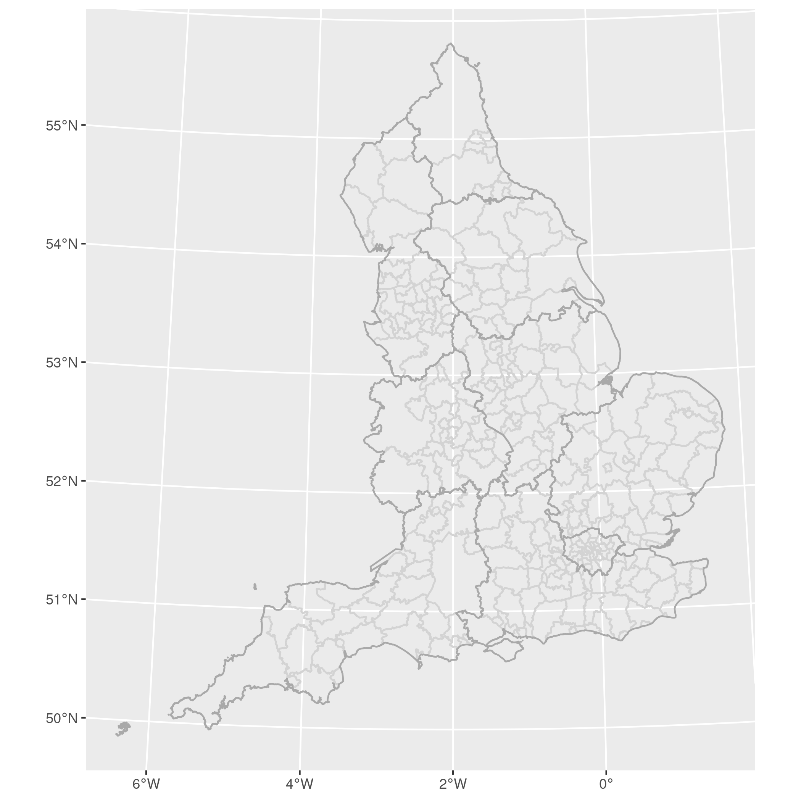
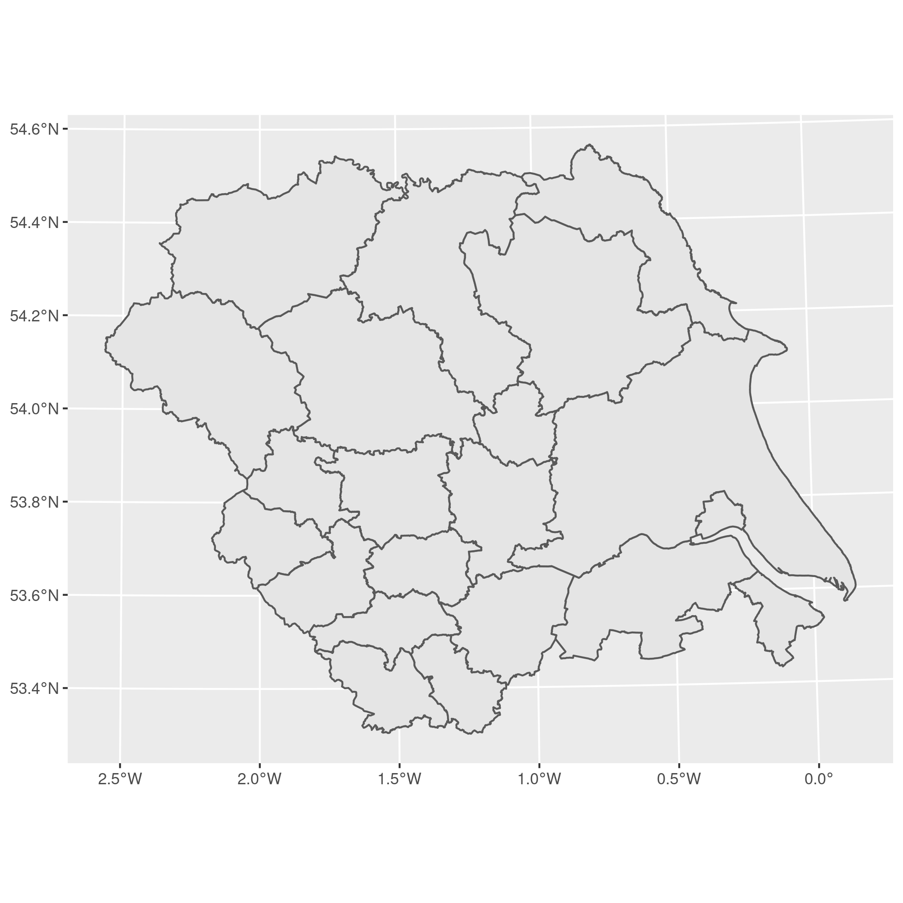

Clip polygons in R¶
date: 2015-09-01
Clipping polygons is a common GIS task. For example, you might want to study local authorities (LADs) in the Yorkshire and the Humber region but can only obtain a shapefile with all the LADs in England. Removing all the LADs outside of the Yorkshire and the Humber can be achieved by ‘clipping’ the LADs, using the extent of the larger region as a template.
First, install and load sf for loading the shapefiles, and
tidyverse for manipulating the data and plotting the maps.
# install.packages("dplyr")
# install.packages("ggplot2")
# install.packages("sf")
library("dplyr")
##
## Attaching package: 'dplyr'
## The following objects are masked from 'package:stats':
##
## filter, lag
## The following objects are masked from 'package:base':
##
## intersect, setdiff, setequal, union
library("ggplot2")
library("sf")
## Linking to GEOS 3.9.0, GDAL 3.2.1, PROJ 7.2.1
Then download and unzip our test data (shapefiles of English regions and local authorities):
tmp_dir = tempdir()
# a region shapefile for England ~6MB
tmp_reg = tempfile(tmpdir = tmp_dir, fileext = ".zip")
download.file(
"https://borders.ukdataservice.ac.uk/ukborders/easy_download/prebuilt/shape/England_gor_2011.zip",
destfile = tmp_reg
)
unzip(tmp_reg, exdir = tmp_dir)
# local authorities for England ~
tmp_lad = tempfile(tmpdir = tmp_dir, fileext = ".zip")
download.file(
"https://borders.ukdataservice.ac.uk/ukborders/easy_download/prebuilt/shape/England_lad_2011.zip",
destfile = tmp_lad
)
unzip(tmp_lad, exdir = tmp_dir)
Now load these files ready for clipping:
reg = read_sf( # regions
dsn = tmp_dir,
layer = "england_gor_2011"
)
lad = read_sf( # Local Authority District
dsn = tmp_dir,
layer = "england_lad_2011"
)
Let’s check these have loaded correctly with a plot:
plot = ggplot() +
geom_sf(data = lad, colour = "light gray", fill = NA) +
geom_sf(data = reg, colour = "dark gray", fill = NA)
ggsave("../_static/img/regions-plot.png", plot)
## Saving 7 x 7 in image

Regions plots¶
To clip the LADs to a region, use sf::st_contains() with
sparse = FALSE argument:
yh =
reg %>%
filter(name == "Yorkshire and The Humber")
yh_lads =
lad %>%
filter(st_contains(yh, ., sparse = FALSE))
And a plot to check the clip succeeded:
plot = ggplot(yh_lads) + geom_sf()
ggsave("../_static/img/yh-lads.png", plot)
## Saving 7 x 7 in image
We can also check the data are still included in the yh_lads object
(without the geometry):

Yorkshire and The Humber LADs¶
Original post (rgdal)¶
I’ve archived the original post based on rgdal and reproduced the
instructions below, but I strongly recommend using sf for new code.
# install.packages("rgdal") # uncomment and run if not already installed
# install.packages("rgeos")
# If you run in to trouble installing rgdal and rgeos on Linux (Ubuntu) see:
# https://philmikejones.me/post/2014-07-14-installing-rgdal-in-r-on-linux/
require("rgdal")
require("rgeos")
tmp_dir = tempdir()
tmp_reg = tempfile(tmpdir = tmp_dir, fileext = ".zip")
download.file(
"https://census.edina.ac.uk/ukborders/easy_download/prebuilt/shape/England_gor_2011.zip",
destfile = tmp_reg
) # ~6.4MB
tmp_lad = tempfile(tmpdir = tmp_dir, fileext = ".zip")
download.file(
"https://census.edina.ac.uk/ukborders/easy_download/prebuilt/shape/England_lad_2011.zip",
destfile = tmp_lad
) # ~25MB
unzip(tmp_reg, exdir = tmp_dir)
unzip(tmp_lad, exdir = tmp_dir)
# I recommend loading the shapefiles with readOGR() in the rgdal package
regions <- readOGR(tmp_dir, "england_gor_2011")
lads <- readOGR(".", "england_lad_2011")
# Extract Yorkshire and the Humber
regions <- regions[regions@data$name == "Yorkshire and The Humber", ]
# Clip the LADs
yh_lads <- gIntersection(regions, lads, byid = TRUE, drop_lower_td = TRUE)
# Easy, but we're not finished yet.
# The clipped polygons no longer contain a data frame because the gIntersection
# doesn't (and can't) know which data frame items to save in to the new object.
# This means we must add them back in manually, but even this is relatively
# straight-forward.
# Recreate the data frame
# The row names for the clipped polygons are a concatenation of the regions row
# name and the LAD row names. These are in the form x yyyy where x is the
# region row name (in our case always 5, because Yorkshire and The Humber was
# row 5) and yyyy is the LAD row name.
row.names(yh_lads) <- gsub("5 ", "", row.names(yh_lads))
keep <- row.names(yh_lads)
# For the sake of simplicity I also change the polygon IDs so they are
# consistent with their respective row names. This step is probably optional,
# but I prefer to ensure they match so I have a consistent set of IDs to work
# with later on. If you choose not to do this I don't think you'll run into
# any problems but YMMV
yh_lads <- spChFIDs(yh_lads, keep)
# Now we create a copy of the LAD dataframe and filter it so that it only
# contains the rows we want to keep, using row names to perform the match:
yh_data <- as.data.frame(lads@data[keep, ])
# Finally we create a SpatialPolygonsDataFrame object with our clipped polygons
# and our subsetted data frame:
yh_lads <- SpatialPolygonsDataFrame(yh_lads, yh_data)
# Check it worked with a plot
plot(yh_lads)
# and check the attributes:
yh_lads@data
## CODE NAME ALTNAME
## 2 E07000164 Hambleton
## 8 E07000169 Selby
## 9 E08000017 Doncaster
## 37 E07000168 Scarborough
## 39 E08000032 Bradford
## 43 E07000165 Harrogate
## 105 E07000167 Ryedale
## 124 E07000166 Richmondshire
## 162 E06000012 North East Lincolnshire
## 165 E08000035 Leeds
## 175 E07000163 Craven
## 204 E08000033 Calderdale
## 207 E06000013 North Lincolnshire
## 214 E08000019 Sheffield
## 225 E06000010 Kingston upon Hull, City of
## 245 E06000011 East Riding of Yorkshire
## 248 E06000014 York
## 251 E08000036 Wakefield
## 254 E08000034 Kirklees
## 297 E08000016 Barnsley
## 320 E08000018 Rotherham